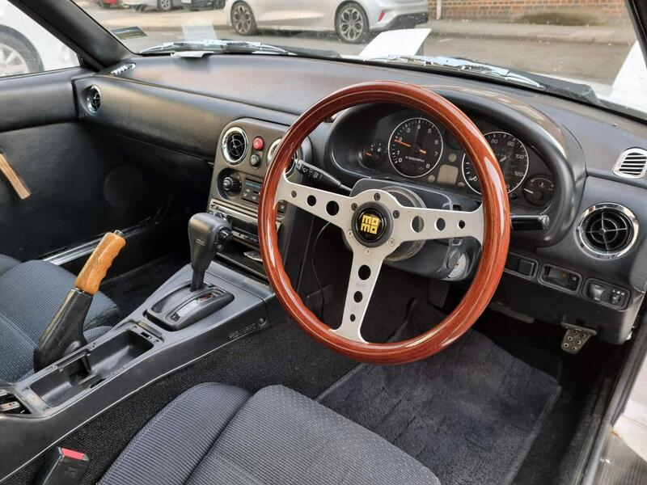
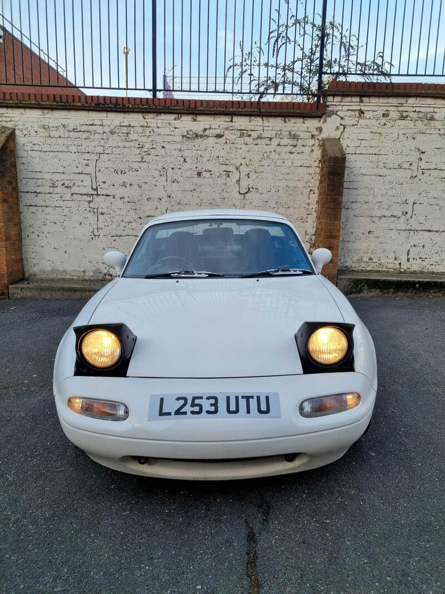
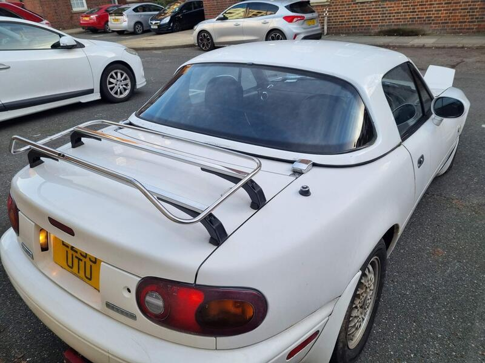

Seller photos from the AutoTrader ad.
2003 MX-5 1.8 S
Not an NB-FL. Leave it out.
Key facts
| Price | £2,500 |
|---|---|
| Year | 2003 |
| Miles | 103,072 |
| Variant | 1.8 S |
| Edition | Standard |
| Engine | 1.8 |
| Colour | White |
| Registration | 2003 |
| Owners | 11 owners |
| Seller | Private seller |
| Location | Bloomsbury |
| From Poole | ~110 mi (estimate) |
| Source | AutoTrader, checked 12 Oct 2026 |
Why buy it
- See the ad
Things to check
- Listed as a 2003 1.8 S, but the description says it's a 1994
Listed as a 2003 1.8 S, but the description says it's a 1994 Mk1 automatic, and the photo shows pop-up headlights
- 11 owners, imported
11 owners, imported
- Mk2.5 weak spots
Sills, rear arches and chassis rails for rust, the hood seams, and when the cambelt was last changed.
Seller says (extract)
“Mazda MX-5 mk1 1994 1.8L White Automatic Features and a few things I fitted to the car since purchasing in 2022: - BBS cross-spoke alloy wheels - MOMO Indy Heritage Steering Wheel Mahogany Wood 350mm - Wooden Handbrake lever - Set of new tyres (Toyo Proxes CF2 185/60 R14 82H) - Pioneer active subwoofer TS-WX130DA - JVC 6.5 2 way door speakers - Bluetooth stereo unit - Boot / luggage rack - Chrome Windscreen wiper blades…”